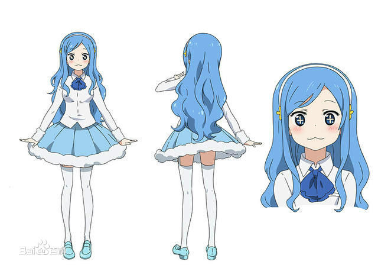

|
我的妹妹“小埋”是个容貌秀丽！文武双全！
任谁都会羡慕的完美女高中生♥
而这个美少女妹妹她有个不为人知的秘密!!
每当她一进入家门后就会……
这里滚呀滚♪那里滚呀滚♪
过着“吃、睡、玩”的鱼干妹生活!?
追踪在家耍任性在外是气质美女“小埋”的生态！ |
|
土间埋 |
土间埋（土间うまる）
16岁，生日：9月26日。可以评价为一个美人。性格温柔并且头脑又很好，被所有才能眷顾着的无可挑剔的美少女高中生，然而在家中的的小埋却是个干物妹。
在家总是披着仓鼠斗篷，二头身，懒惰，任性的熊孩子形象。喜欢玩游戏和看动漫，热爱各种零食，最喜欢的食物是薯片，最喜欢的饮料是可乐，不喜欢吃青椒和芥末。游戏高手，曾以U·M·R的身份参加游戏街头霸王四的游戏获胜。
和哥哥两人生活在一起，习惯性依赖哥哥，和哥哥分开会感到不安、寂寞。
在学校被谣传为家境富裕的大小姐，在应邀去希尔芬家做客时发觉谣言本身应该是指希尔芬。可能是一传十十传百的过程中主语被歪曲成小埋本人。
|
|
土间太平 |
土间太平（土间タイヘイ）
年龄约25岁(高中毕业后就职5年)。太平应该是大学毕业后才工作的，漫画开始时的年龄大概是25、26岁，证据一是10年前的回忆里太平在上高一，这点后来太平的回忆及和崩巴的对话里可以证实，两人认识高中相识，认识了10年，而漫画开始时小埋也在上高一，所以兄妹相差10岁左右；证据二是在漫画海边度假后，崩巴来小埋家里提到了海老名菜菜，小埋脑海里出现崩巴因骚扰未成年少女菜菜上报纸时，报纸上写明崩巴是25岁，太平应该与之同年；证据三是动画7话里，太平跟踪猫咪迷路到小时走过的路，觉得路熟悉但是想不起什么时候走过时，回忆顺序是小学，初中，高中，大学，工作，同时这里高中的制服也证明了10年前的回忆里是高中。头脑很聪明，就学习来说比小埋还好。
很宠小埋，曾说过小埋变成这个样子都是自己的原因。工作认真，对朋友很照顾，帮助崩巴完成工作，也曾辅导过崩巴学习。有驾照，但是实战却很弱。 |
|
海老名菜菜 |
海老名菜菜（海老名菜々）
小埋的好友，同班同学，从老家秋田前来东京求学。和小埋家住同一个公寓，是很害羞的一个人，巨乳。没什么自信，食量较大，与小埋和太平一起吃饭时，肚子咕咕叫一声，羞红了脸。
是一个温柔的人，因为担心踩到地上的花瓣，而以奇怪的脚步走路。太平对她很温柔。漫画第十话中太平将猜拳比赛中赢来的超大号猫尔摩斯big公仔送给了海老名酱，喜欢太平。 |
|
本场切绘 |
本场切绘（本场切絵）
小埋的同学，由于看上去凶恶和开学典礼那天拿竹刀殴打本场猛（习惯），所以被同学认为不好相处，但实际上只是很认生，只能和小孩子说话。[1]
捡到了小埋掉落的学生证，想要还给小埋，所以跟踪小埋到她家。
非常喜欢小埋，所以对经常在小埋身边的海老名抱有些许敌意。把前来开门的小埋（家里的小埋）当作了小埋的妹妹小困，被小埋（家里埋）一瞬间萌到，并拜小埋为师傅，从此经常到小埋家玩，也和小埋（外面的小埋）、海老名、希尔芬、太平成为了朋友。哥哥是崩巴。 |
|
 橘·希尔芬福特 |
橘·希尔芬福特（橘・シルフィンフォード/ Sylphynford Tachibana）
小埋的同学，成绩与小埋一样优秀，视小埋为对手(对手就是…分出胜负之后就能成为同伴的人！！)，是学校里唯一一个不穿制服的学生。很有活力，总是叫错海老名的姓氏。曾以T·S·F的身份参加太空霸王四的比赛，在即将战胜小埋(U·M·R)时，突然看到人群中的哥哥阿历克斯红着脸逃走了。在没有认出是小埋的情况下，与小埋(U·M·R)成了朋友，是个可爱的人。 |
|
叶> |
叶
太平和崩巴的高中同学，后来进入同一家公司。是太平，崩巴，阿历克斯的上司，公司社长的女儿，比太平年长一岁。经常吐槽崩巴，喜欢太平。因为长相与小埋极其相似和南小鸟发色相近，被广大观众们戏称“大埋”或者是“南大鸟”。妹妹是金刚光 |
|
土间妈妈 |
土间妈妈
土间埋和土间太平的妈妈，在TV第7话中有露面，长相和小埋一模一样，被网友戏称为“老埋”、“埋妈”或“老干妈”··· |